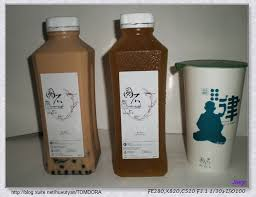

一颗表面圆滑光亮的矿石，是经过千锤百炼造就而成的，「圆石」就是如此。在圆石诞生前整整筹备了一年，在这一年中走访了许多地方。在南投凤凰谷与老师傅请教茶道时，好奇地问他：「为什么要收集那么多的圆石？」，「因为每一颗石头都是万中选一，得来不易的；一个尖角的石头，要转变成圆角，需要数年的时间去琢磨，更何况是圆石！」老师傅语带愉悦地回答者。这番对话令我印象深刻，正好那时为无法找到合适的店名在伤脑筋，「圆石」就此诞生了；而圆石的图腾也有着一个特殊的涵义，那就是顺着圆形的轨道勾画出一条龙，代表「圆融」，老师傅曾说过:「喝茶就像人生一样，需要慢慢地品尝出个中滋味， 圆融对待事物才是不二法门，让自我沉淀才能尝出茶真正的甘甜味。
沙拉
湯物